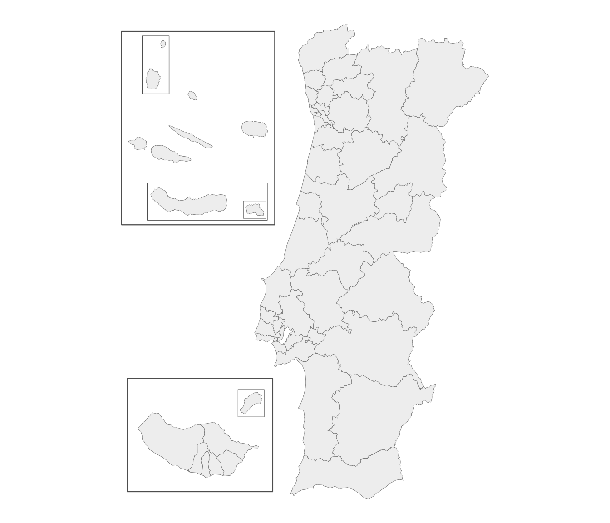
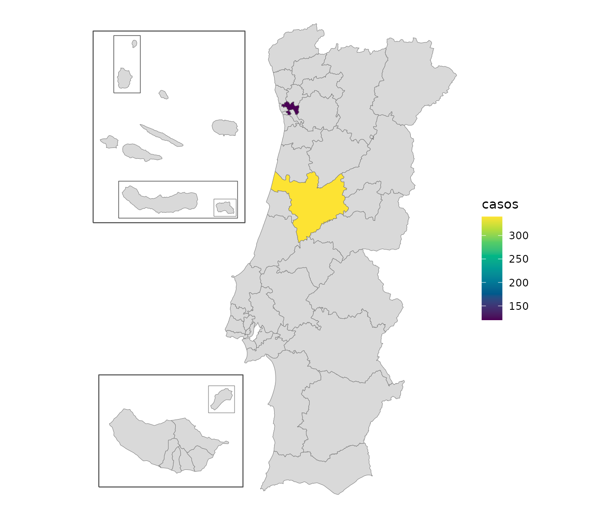
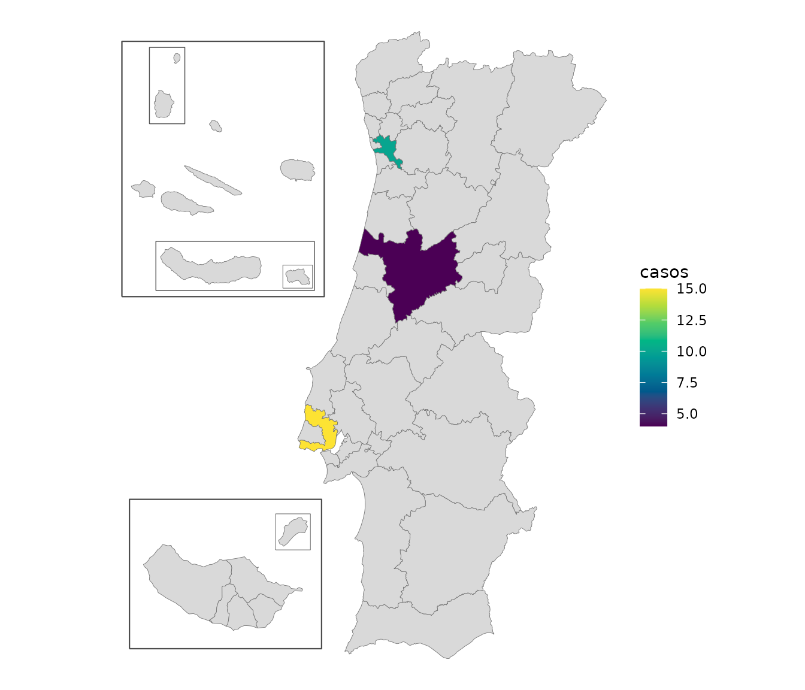

Besides the administrative levels, geopt includes three health geographies. They’re built from the same freguesia boundaries as everything else, so their borders line up exactly with municipalities and NUTS regions.
-
uls: the 39 Unidades Locais de Saúde (local health units) created by the 2024 reform of the national health service (SNS), plus their equivalents in the islands, which aren’t called ULS: nine Unidades de Saúde de Ilha in the Açores (“USI São Miguel”, …) and seven centros de saúde in Madeira (“CS Funchal Zona I”, …). 55 units in total. -
reg_saude: the 7 health regions (regiões de saúde), with their 2024 boundaries. -
aces: the 71 Agrupamentos de Centros de Saúde (groups of primary-care centres) that the ULS replaced in 2024. Seven of the 71 are ULS that already existed before the reform and took the place of ACES in their area: Guarda, Matosinhos, Alto Minho, Nordeste, Baixo Alentejo, Litoral Alentejano and Norte Alentejano. ULS de Castelo Branco, which also existed, appears through its two ACES.
They work wherever a level is accepted:
plot_pt(level = "uls")
Joining health data
Join by unit name. Names are matched the same way as everywhere else, ignoring case and accents:
df <- data.frame(uls = c("ULS Coimbra", "uls são joão"), casos = c(340, 120))
m <- get_map("uls", data = df, by = "uls")
#> get_map: 53 boundaries have no data row (NA fill).
plot_pt(m, value = "casos")
Some ULS split municipalities
Lisboa is divided between three ULS: São José, Santa Maria
and Lisboa Ocidental. Loures, Porto and Funchal are split too,
and so is Gondomar, by a single freguesia (see below). The
uls map draws these correctly, because it’s built from
freguesias.
This matters when joining data. If it’s by municipality, there’s no
way to tell which of Lisboa’s three ULS a value for Lisboa belongs to.
For data by municipality, use uls_municipio instead. It’s
the same as uls, except that ULS sharing a municipality are
combined into one unit:
h <- pt_lookup(health_vintage = "2024")
unique(h$unit_municipio[h$unit != h$unit_municipio])
#> [1] "ULS Lisboa Ocidental + Loures-Odivelas + Santa Maria + São José"
#> [2] "ULS Santo António + São João"
#> [3] "CS Funchal Zona I + Funchal Zona II"ULS Loures-Odivelas is in the first unit, although no part of Lisboa belongs to it. Combining works in chains: ULS São José also covers four freguesias of Loures, and the rest of Loures belongs to ULS Loures-Odivelas, so a value for Loures can’t be divided between those two either. Counting the freguesias of each municipality by ULS shows the chain:
u <- unique(h$unit_municipio[h$municipio == "Lisboa"])
lx <- h[h$unit_municipio == u, ]
table(lx$municipio, sub("ULS ", "", lx$unit))
#>
#> Lisboa Ocidental Loures-Odivelas Santa Maria São José
#> Cascais 4 0 0 0
#> Lisboa 3 0 8 13
#> Loures 0 6 0 4
#> Mafra 0 0 11 0
#> Odivelas 0 4 0 0
#> Oeiras 5 0 0 0Every municipality in the chain gets the combined unit, including those that lie entirely in one ULS, such as Odivelas and Cascais. Data for Odivelas on its own would fit ULS Loures-Odivelas, but data for Loures wouldn’t, so no total for ULS Loures-Odivelas can be built from data by municipality.
In pt_lookup() these columns are called
unit and unit_municipio, because with
health_vintage = "2022" they hold ACES instead of ULS (see
below).
pt_join() picks the right column automatically. Joining
by freguesia adds uls; joining by municipality adds only
uls_municipio:
df <- data.frame(concelho = "Gondomar", v = 1)
out <- pt_join(df, by = c(municipio = "concelho"))
#> pt_join: 1/1 row(s) matched at municipio level.
out$uls_municipio
#> [1] "ULS Santo António + São João"
"uls" %in% names(out)
#> [1] FALSETo map data by municipality, add up the values by
uls_municipio and draw them at
level = "uls_municipio", where each combined unit is a
single area:
df <- data.frame(concelho = c("Lisboa", "Odivelas", "Porto", "Maia", "Coimbra"),
casos = c(10, 5, 7, 3, 4))
df <- pt_join(df, by = c(municipio = "concelho"))
#> pt_join: 5/5 row(s) matched at municipio level.
casos <- aggregate(casos ~ uls_municipio, data = df, FUN = sum)
casos
#> uls_municipio casos
#> 1 ULS Coimbra 4
#> 2 ULS Lisboa Ocidental + Loures-Odivelas + Santa Maria + São José 15
#> 3 ULS Santo António + São João 10
plot_pt(casos, value = "casos", level = "uls_municipio", by = "uls_municipio")
#> get_map: 47 boundaries have no data row (NA fill).
Lisboa and Odivelas add up to one value, for the combined unit, and so do Porto and Maia.
One freguesia is handled specially. Lomba, in Gondomar, belongs to a
different ULS and ACES from the rest of Gondomar. Taken as it is, it
would combine ULS Vila Nova de Gaia/Espinho with Porto’s ULS into one
unit, and ACES Gondomar with ACES Espinho/Gaia. Following established
practice, uls_municipio and aces_municipio
count Lomba with the rest of Gondomar, which keeps those units separate,
and their maps draw it with Gondomar too. The freguesia-level
uls and aces still place Lomba correctly.
Before and after the 2024 reform
Before 2024, primary care was organized into ACES, under regional
health administrations (ARS). The 2024 reform replaced them with the
ULS, and moved some municipalities to a different health region. geopt
has both versions; choose one with health_vintage:
health_vintage |
unit holds |
reg_saude holds |
Law |
|---|---|---|---|
"2024" (current) |
a ULS, or its island equivalent | the health regions since 2024 | Decreto-Lei 102/2023, which created the ULS |
"2022" |
an ACES (71 of them) | the health regions before 2024 | Decreto-Lei 28/2008, which created the ACES |
Four municipalities changed health region in 2024:
h24 <- pt_lookup(health_vintage = "2024")
h22 <- pt_lookup(health_vintage = "2022")
d <- data.frame(municipio = h24$municipio,
reg_saude_2022 = h22$reg_saude[match(h24$dtmnfr, h22$dtmnfr)],
reg_saude = h24$reg_saude)
d <- d[d$reg_saude != d$reg_saude_2022, ]
unique(d[, c("municipio", "reg_saude_2022", "reg_saude")])
#> municipio reg_saude_2022 reg_saude
#> 139 Ovar Centro Norte
#> 1541 Alcobaça LVT Centro
#> 1613 Nazaré LVT Centro
#> 2279 Ourém LVT CentroACES names match and join like any other level, so data from before the reform can go on a map:
df <- data.frame(aces = c("ACES Baixo Vouga", "aces braga"), casos = c(10, 20))
head(pt_join(df, by = "aces"))
#> pt_join: 2/2 row(s) matched at aces level.
#> aces casos nuts1_cod nuts1 reg_saude
#> 1 ACES Baixo Vouga 10 PT1 Continente Centro
#> 2 aces braga 20 PT1 Continente Norte
plot_pt(level = "aces")Some ACES also split municipalities, so for data by municipality
there’s an aces_municipio column, and an
"aces_municipio" map, that work the same way as
uls_municipio:
Notes and limits
- Every freguesia has both a ULS and an ACES.
- Health regions and ULS don’t nest: ULS Médio Tejo is in two health regions (Centro and Lisboa e Vale do Tejo). Treat them as separate layers, not as a hierarchy.
- The health levels are only available on the current freguesia map,
not with
get_map(admin_vintage = "2013").